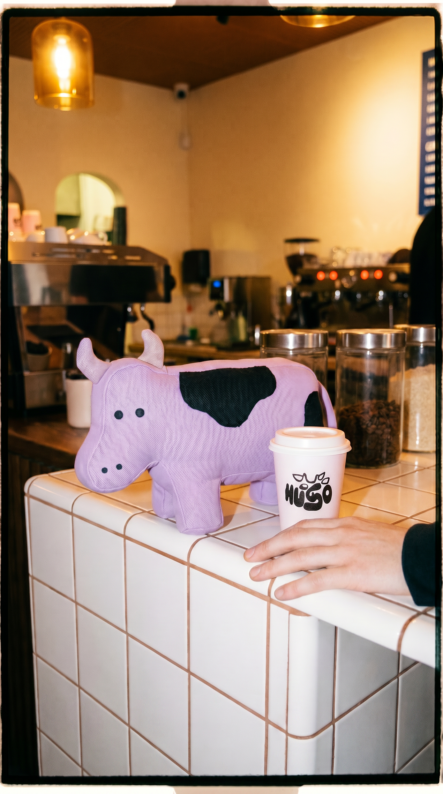
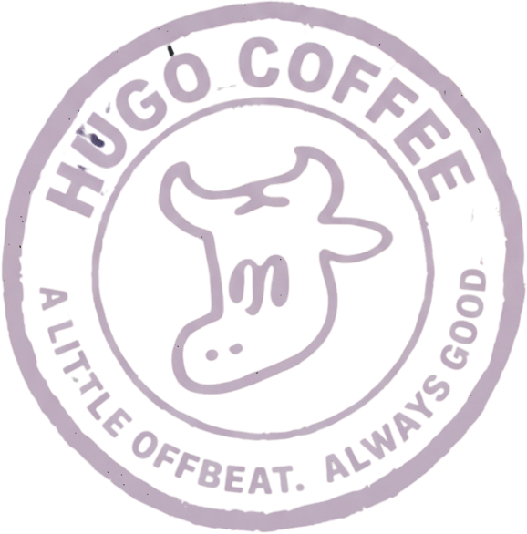
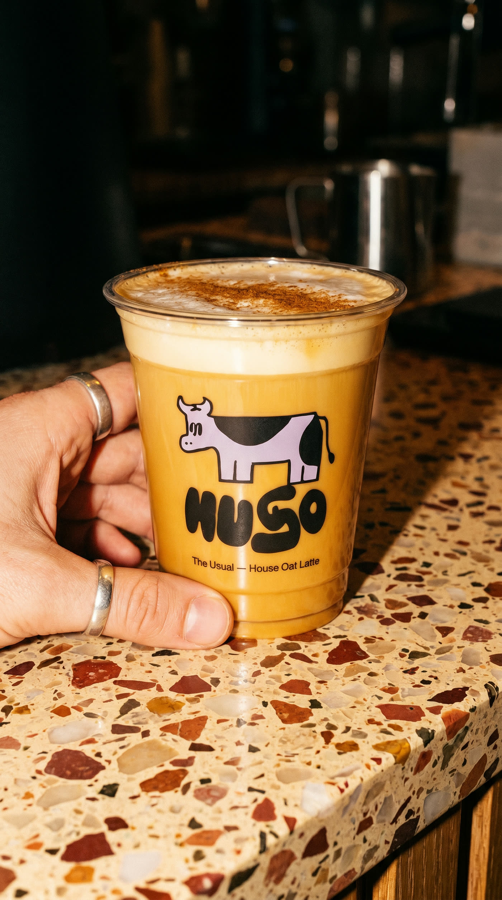
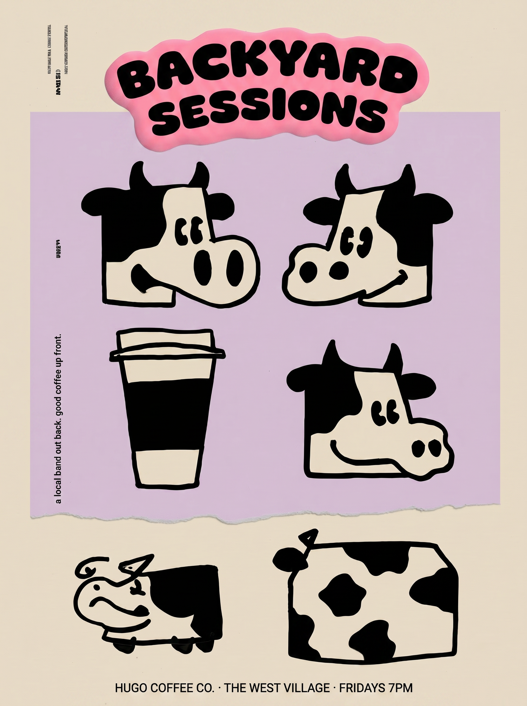
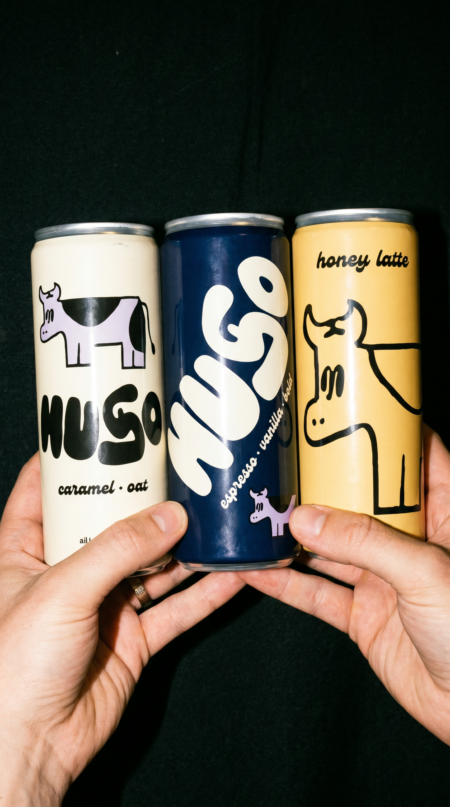
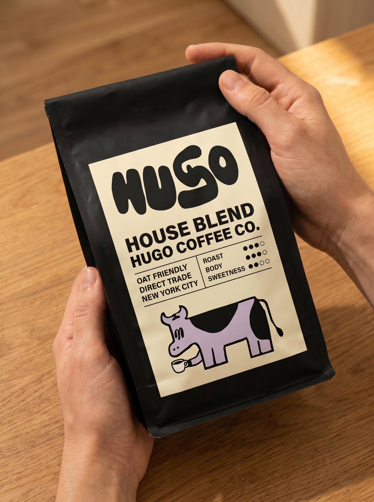
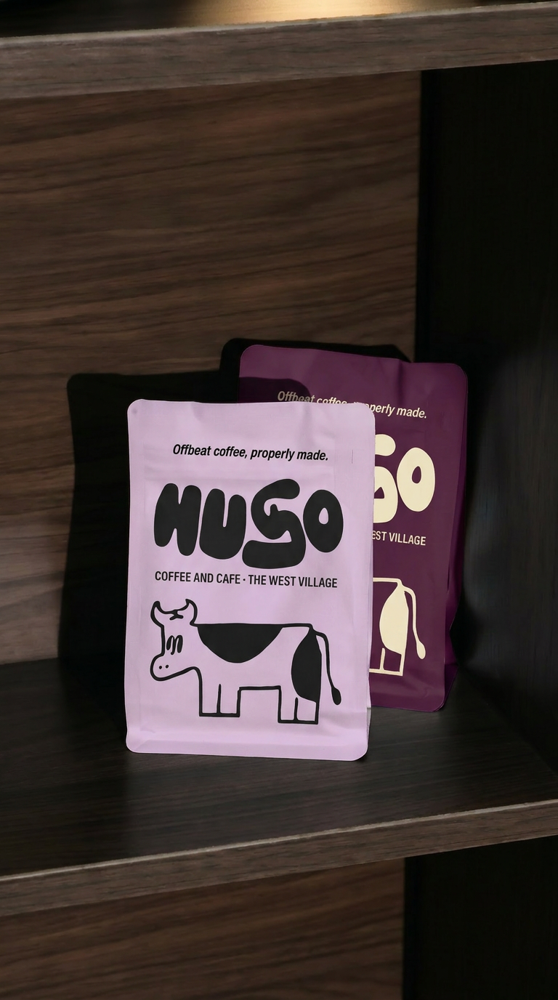
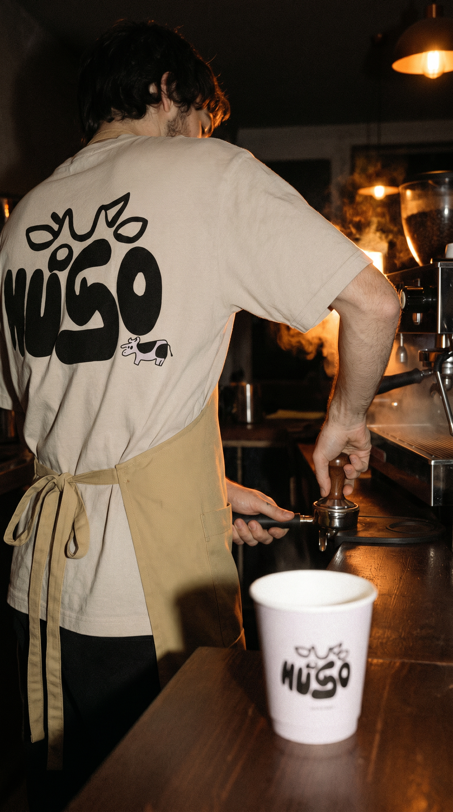
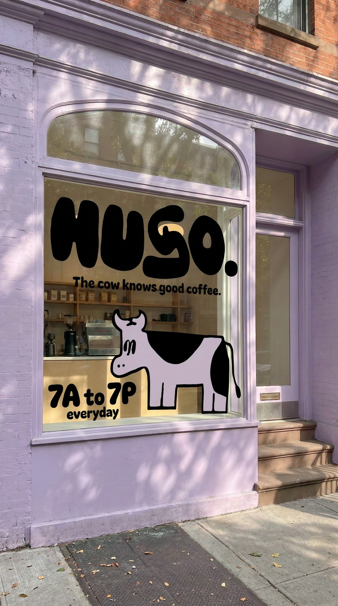

Serious coffee. Unserious cow.
Hugo — serious coffee, unserious cow


MEET HUGO.
He is a small purple cow. He has worked here since the shop opened and has never once been asked to.
He has opinions about milk. He does not have opinions about single origin. Once a month he feels something new and it goes on the board, and when he is over it, it comes off.
He is a little dramatic. The coffee is not.
The cow knows good coffee.

SIX MOODS.
ONE FREE.
collect all six. the cow buys the last one. every stamp is a different feeling, and six of them makes you a regular.
THE MOOD CARD
five down. one to go. the cow is getting attached.

BACKYARD SESSIONS.
live music out back. every friday.
records, a small yard, whatever the cow is into this week. bring a book, or don't.
the cow insists.
our products
TAKE THE COW HOME.
cans, beans, and a plush that judges you.

cold brew, canned the morning it is pulled. four moods, twelve to a case.

roasted in small batches. whole or ground, and the cow has opinions about which.
the cow, actual size. he sits on the counter and watches you work.

six moods, die cut, weatherproof. one goes on the laptop, the rest go missing.

aprons, totes and caps in the house lilac. worn by staff, sold to regulars.
412 BLEECKER ST.
